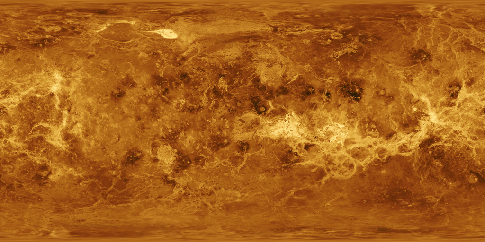

<!DOCTYPE html>
<html>
<head>
    <script src="../js/aframe100.js"></script><!--https://aframe.io/releases/1.0.0/-->
    <script src="../js/aframe-ar.js"></script><!-- https://raw.githack.com/jeromeetienne/AR.js/2.2.0/aframe/build/-->
    <style>
        * {
            margin: 0;
            padding: 0;
        }
        
        #play-button{
            position: absolute;
            bottom: 10%;
            left: 50%;
            margin-left: -50px;
            width: 100px;
            height: 100px;
            border-radius: 50%;
            border: 3px white solid;
            /*background-color: rgba(255, 255, 255, 0.2);
            color: white;*/
            text-align: center;
            line-height: 100px;
            font-family: monospace;
            cursor: pointer;
            z-index: 500;
            /*transition: background-color 0.5s, color 0.5s;*/
            background-image: url("../media/img/play-button.png");
            background-size: 100% 100%;
            background-repeat: no-repeat;
            background-position: center center;
        }
        
        #play-button:hover{
            /*background-color: rgba(255, 255, 255, 1.0);
            color: black;*/
            background-image: url("../media/img/pause-button.png");
            background-size: 100% 100%;
            background-repeat: no-repeat;
            background-position: center center;
        }
    </style>
    <script>
        document.addEventListener("DOMContentLoaded", function(){
            console.log("Hello, World!");
            let videoPlaying = false;
            
            document.getElementById("play-button").addEventListener("click", function(){
                if(videoPlaying){
                    document.getElementById("test-video").pause();
                    videoPlaying = false;
                }
                else{
                    document.getElementById("test-video").play();
                    videoPlaying = true;
                }
            });
        });
    </script>
</head>
<body style='margin : 0px; overflow: hidden;'>
    <div id="play-button"></div>
    <a-scene embedded arjs>
        <a-assets>
            
            
            <!--
            -->
        </a-assets>
        
        <a-marker preset="hiro">
            <a-entity geometry="primitive: plane; width: 1; height: 1;" rotation="-90 0 0" material="src: #discovery-album-cover; side: double;" position="0 0.2 0"></a-entity>
            <a-video src="#test-video" width="4" height="3" position="0 -0.5 0" rotation="-90 0 0"></a-video>
            <!--<a-entity geometry="primitive:sphere; radius: 0.5;" animation="property: rotation; to: 0 360 0; loop: true; dur: 10000; easing: linear" position='0 0.5 0' material='src: #earth-planet-object-texture'></a-entity>-->
        </a-marker>
        
       <!-- <a-marker id="secondary-marker" type="pattern" url="../media/pattern/ssshh.patt">
            <a-entity geometry="primitive:sphere; radius: 0.5;" animation="property: rotation; to: 0 360 0; loop: true; dur: 10000; easing: linear" position='0 0.5 0' material='src: #venus-planet-object-texture'></a-entity>
        </a-marker>
        
        <a-marker id="tertiary-marker" type="pattern" url="../media/pattern/pattern-discovery-cover-white.patt">
            <a-entity geometry="primitive:sphere; radius: 0.5;" animation="property: rotation; to: 0 360 0; loop: true; dur: 10000; easing: linear" position='0 0.5 0' material='src: #mars-planet-object-texture'></a-entity>
        </a-marker>-->
        
        <a-entity camera></a-entity>
    </a-scene>
</body>
</html>